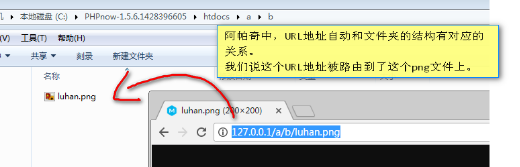
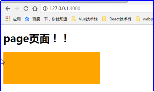
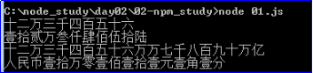

原文连接:https://www.cnblogs.com/rope/p/10725857.html
一、路由机制（静态资源文件处理）
1.1 Nodejs没有根目录
MIME类型：http://www.w3school.com.cn/media/media_mimeref.asp
在Apache中，它会自动将htdocs文件夹提供静态化路由服务。

但是Nodejs没有这个机制。
在文件夹中创建这样的层次目录：
┠ www
┋┠ a
┋┋┠ b
┋┋┋┠ page.html
┠ 11-Nodejs没有根目录容器.js
访问的时候，可以看见page.html页面：
var http = require('http');
var fs = require('fs');
var server = http.createServer(function(req,res){
res.setHeader("Content-Type", "text/html;charset=UTF8");
fs.readFile("./www/page.html" , (err,data)=>{
res.end(data.toString());
})
});
server.listen(3000);
会发现URL中看不出来物理文件的真实位置。
可以用req.url来识别url地址，从而呈递不同的文件：
page.html页面：
<html lang="en">
<head>
<meta charset="UTF-8" />
<title>Document</title>
<style type="text/css">
div{
width: 300px;
height: 100px;
background: orange;
}
</style>
<link rel="stylesheet" href="aaa">
</head>
<body>
<h1>page页面！</h1>
<div></div>
<img src="images/d1.jpg">
<img src="images/d2.jpg">
<img src="images/d3.jpg">
</body>
</html>
var server = http.createServer(function(req,res){
console.log(req.url)
if(req.url == "/"){
fs.readFile("./www/page.html",(err,data)=>{
res.setHeader("Content-type","text/html;charset=UTF8");
res.end(data.toString());
});
}else if(req.url == "/images/d1.jpg"){
fs.readFile("./www/images/baby1.jpg",(err,data)=>{
res.setHeader("Content-type","image/jpeg");
res.end(data);
});
}else if(req.url == "/images/d2.jpg"){
fs.readFile("./www/images/d2.jpg",(err,data)=>{
res.end(data);
});
}else if(req.url == "/d3.jpg"){
fs.readFile("./www/images/d3.jpg",(err,data)=>{
res.end(data);
});
}else if(req.url == "aaa"){
fs.readFile("./www/css/css.css",(err,data)=>{
res.setHeader("Content-type","text/css");
res.end(data);
});
}else{
res.setHeader("Content-type","text/html;charset=UTF8");
res.end("404，没有这个页面！");
}
});红色部分是发出的url请求，蓝色部分是根据请求的url从而呈递真实的文件，URL和真实的物理文件的路径没有任何关系！
比如www/a/b/c/d1.jpg可以被路由显示为/d1.jpg
1.2顶级路由设计
Nodejs开启了RestFul路由设计风格。简单来说是：
可以通过这样的路径来查看100001号用户的信息：
http://127.0.0.1:3000/student/100001
而不是老土的：
http://127.0.0.1:3000/showinfo.php?id=100001
后面将知道可以利用POST、GET请求的不同，也可以让一个URL有不同的操作。
这样的路由的好处就是：不需要开辟过多的文件夹、并且不暴露技术细节。
可以用字符串match方法，结合正则获取路由中的某部分：
1.3 url模块和path模块
一个完整的URL，包括querystring部分（就是get请求字符串部分）、hash部分。
http://127.0.0.1:3000/a/b.html?id=123&name=xiaoming#aaa此时的req.url是：
也就是说，querystring部分属于req.url，但是hash不属于。
但是我们要得到文件名部分，不想要querystring部分，如果正则匹配，太麻烦。
此时node中提供内置模块：url、path、querystring，他们都可以用于URL的识别。
var http = require("http");
var fs = require("fs");
var url = require("url");
var server = http.createServer(function(req,res){
console.log(url.parse(req.url))
});网址：http://127.0.0.1:3000/haha/1.html?id=123&name=xiaoming&sex=男#abc输出的内容：
没有正确识别protocol协议、host主机名、port端口号等等，因为是Windows环境，有这个问题。
如果加上true，此时query部分将自动变为对象，方便我们操作
url.parse(req.url,true);
还有两个模块path、querystring它们都是服务于url的
var http = require('http');
var fs = require('fs');
var url = require('url');
var path = require('path');
var server = http.createServer(function(req,res){
//将url字符串转为json对象
var urljson = url.parse(req.url,true);
//得到文件路径
var pathname = urljson.pathname;
//得到文件扩展名
var extname = path.extname(pathname);
console.log(extname)
});
server.listen(3000);1.4自动路由
创建一个www根目录文件夹，我们的程序能够自动为里面的文件、图片、css、js加上路由，实现一个Apache。
思想：用户输入什么URL，就用fs去读那个文件。
访问/a.png ，就自动读取www/a/b/c/a.png
url可能很复杂，比如：
http://127.0.0.1:3000/a/b/c.html?id=123&asf=32434#3243
要读取c.html。就要过滤掉蓝色的部分，当中有协议、域名、端口号、get请求查询字符串、hash。使用内置url模块：
var pathname = url.parse(req.url).pathname;
url.parse(req.url) 可以将这个url拆分，比如.pathname表示上面红色的部分。有几个不好用的地方，首先就是content-type的事，
如果我们访问的是.html文件，content-type就应该是text/html。如果访问一个.jpg，此时应该是image/jpeg。请参考：http://www.w3school.com.cn/media/media_mimeref.asp
然后就是不能自动识别index文件。比如我们输入：
http://127.0.0.1:3000/a
应该读取www中的a文件夹中的index.html解决办法：这种路径都没有拓展名，如果用户输入了一个URL不存在拓展名，则自动补充/index.html即可。


var http = require("http");
var fs = require("fs");
var url = require("url");
var path = require("path");
//准备mime类型的json
var mimejson = {
".jpg" : "image/jpeg",
".png" : "image/png",
".gif" : "image/gif",
".html": "text/html;charset=UTF8",
".css" : "text/css",
".js" : "application/x-javascript",
".ogg" : "audio/ogg",
".mp3" : "audio/mpeg"
}
var server = http.createServer(function(req,res){
//访问路径
var pathname = url.parse(req.url).pathname;
//得到扩展名
var extname = path.extname(pathname)
//如果当前路径不以扩展名结尾，此时表示这是一个文件夹形式的路径，要自动补全index.html
if(!extname){
//如果不是以“/”结尾，此时会早浏览器识别图片路径层次有问题
//比如http://127.0.0.1:3000/a和http://127.0.0.1:3000/a/不一样
//前者认为是同级目录下的，后者认为是a文件夹中的
if(pathname.substr(-1) != "/"){
res.writeHead(302, {"Location": pathname + "/"})
}
pathname = pathname + "index.html";
extname = "./html";
}
//检查是否属于已知的mime类型
if(mimejson.hasOwnProperty(extname)){
//设置MIME类型（下行报文头）
res.setHeader("Content-type", mimejson[extname]);
}
//读取对应的真实文件路径，这里将当前文件的路径和www文件夹和访问的路径合并
fs.readFile("./www/" + pathname , function(err,data){
if(err){
res.end("没有这个文件");
return;
}
res.end(data);
})
});
server.listen(3000,function(err){
console.log("服务器开启成功，在3000端口，快打开浏览器看看吧！");
})二、总结和REPL环境
2.1复习
NodeJS是什么？
JavaScript RunTime（JavaScript运行环境），是将Chrome V8引擎移植到了服务器上追求自治性能的技术，可以搭建http服务器。
使用的语言还是JavaScript，将js的触角伸到了服务器端。NodeJS有什么特点？
Single Thread（单线程）
Non-Blocking I/O（异步I/O，非阻塞I/O）
Event-Driven（事件驱动）NodeJS适合开发什么样的业务？
适合I/O频繁的业务：留言本、贴吧、微博等等。
不适合计算多的业务：语音识别、图像识别等等。NodeJS如何安装？
在windows下安装了node，此时你的环境变量中就有了node文件夹的路 径，此时用CMD命令就可以运行nodejs程序了。如何执行NodeJS程序？
① 用CMD的cd命令进入项目文件夹
② 执行谁就node谁内置模块
Nodejs中为了方便开发和最终的编译的轻量，所以使用了“模块”（modules）的概念。
模块指的是功能相关的js文件的集合，就称为一个模块。一个module指的是一个文件组，或者说一组文件。
这一组文件可以小到只有一个文件，也就是说这一个module就只有一个js文件；也可以大到很多文件，甚至这一个module中还有其他module。
模块用require()进行引用，我们学习的内置模块有：
fs模块用来处理文件
var fs = require("fs");
fs.readFile("./test.txt",(err,data)=>{
});http模块，创建服务器：
var http = require("http");
http.createServer((req,res)=>{
req.url //用户访问的路径
res.write();
res.end();
}).listen(3000,function(err){})path模块，主要负责和文件路径有关系的事情：
var path = require("path");
path.extname(); //获得文件拓展名
path.resolve(); //智能合并url模块，主要负责url地址的拆分等一些功能：
var url= require("url");
url.parse();
Nodejs中的路由：
Nodejs和apache不一样，apache有自动的路由，但是nodejs没有自动路由。
必须用req.url来识别访问的路径，然后用fs.readFile()去读取某一个文件，然后res.end()出去。Nodejs非常方便进行顶级路由设计，比如twitter的路由：
http://www.twitter.com/telangpu/followers
此时并没有一个叫做telangpu的文件夹，也没有followers的子文件夹！
什么是路由？
路由可以理解成根据请求不同的URL，映射到不同处理程序上。反过来，需要对每个不同的页面定义不同的路由来实现区分界面。
简单来说，路由就是给指定的页面分配一个url地址。通过这个url地址，就能访问到该页面了。
比如写了一个页面：/static/public/game/index.html
服务器域名地址是：www.iqianduan.cn 通过一些方式，给该页面配置了一个路由地址/game
那么，就可以通过http://www.iqianduan.cn/game访问到上面这个index.html文件了
支持RESTful的路由，遵循国际规范。
2.2 REPL环境
介绍Nodejs的REPL环境。
Node.js REPL(Read Eval Print Loop:交互式解释器) 表示一个电脑的环境，类似 Window 系统的终端或 Unix/Linux shell，我们可以在终端中输入命令，并接收系统的响应。
l 读取 - 读取用户输入，解析输入了Javascript 数据结构并存储在内存中。
l 执行 - 执行输入的数据结构
l 打印 - 输出结果
l 循环 - 循环操作以上步骤直到用户两次按下 ctrl+c 按钮退出Node REPL。
这里和Chrome的F12功能一样，可以直接输入语句，然后执行。
在REPL环境下，测试一下url.parse()语句：
url.parse()功能就是拆分url地址。
path.extname(url.parse("http://www.aaa.com/a/b/c.php?id=1&name=小明#12").pathname);
三、Nodejs的模块系统
3.1先复习HTML环境下的js文件的关系
知识点1：在HTML中，script引用了谁，就会执行谁，浏览器一定能够保证加载、运行顺序的
<html>
<head>
<meta charset="UTF-8">
<title>Document</title>
</head>
<body>
<script type="text/javascript" src="a.js"></script>
<script type="text/javascript" src="b.js"></script>
<script type="text/javascript" src="c.js"></script>
</body>
</html>
知识点2：js文件不能“关住”变量作用域
a.js文件：
var zhongguoyidong = 10086; //相当于给window添加了属性
b.js文件：
alert(zhongguoyidong); //相当于访问window的属性此时能够弹出10086，也就是说a.js文件中定义的变量，b.js文件中能够看见！
全局变量是window对象的属性。
知识点3：IIFE关闭某个js文件时，这个js文件想向外“暴露”某些对象
(function(){
var pi = 3.14;
window.mianji = function(r){
return pi * r * r;
}
window.zhouchang = function(r){
return 2 * pi * r;
}
})();主页面：
<script type="text/javascript" src="a.js"></script>
<script type="text/javascript">
alert(mianji(10))
alert(zhouchang(10))
</script>
看一种复杂的情况，a.js文件和b.js文件都向外暴露了相同的函数：
a.js：
(function(){
var pi = 3.14;
window.mianji = function(r){
return pi * r * r;
}
window.zhouchang = function(r){
return 2 * pi * r;
}
})();b.js
(function(){
var pi = 3.14;
window.mianji = function(d,g){
return 0.5 * d * g;
}
})();index.html
<script type="text/javascript" src="a.js"></script>
<script type="text/javascript" src="b.js"></script>
<script type="text/javascript">
alert(mianji(10,2))
alert(zhouchang(10))
</script>b里面的mianji函数，将a里面的mianji函数覆盖了。
3.2 Nodejs中的模块概念
┣ modules
│┣ a.js
┣01.jsnodejs通过require()函数引用自己写js文件，require谁，就立即运行谁。
a.js
console.log("我是a.js文件");
01.js
require("./modules/a.js");新增一个b.js文件
┣ modules
│┣ a.js
│┣ b.js
┣01.jsrequire("./modules/a.js"); //定义了一个变量
require("./modules/b.js"); //输出这个变量a.js
var aaa = 100;
b.js
console.log(aaa);运行01.js报错。

Nodejs的js文件是天生隔离作用域的，因为没有全局window对象的概念了。
即使将在01.js主文件中，也不能使用这个aaa变量
require("./modules/a.js"); //天生有闭包
console.log(aaa) //报错3.3变量的暴露（exports.** = **）
如果js文件中想要暴露什么，使用exports对象：
┣ modules
│┣ a.js
┣01.jsa.js
var zhongguoliantong = 10000;
exports.zhongguoliantong = zhongguoliantong; //向外暴露变量01.js
var a = require("./modules/a.js"); //接收暴露的对象
console.log(a.zhongguoliantong);
注意两点（约定俗成）：
向外暴露的时候，变量本身叫什么名，暴露的名字就叫什么。
exports.zhongguoliantong = zhongguoliantong;
require接收时，模块文件名（js文件名）是什么，接收的变量就叫什么名字
var a = require("./modules/a.js"); Nodejs的这种require + exports的模式叫CMD规范（Commond Module Definition），但不是nodejs发明的，
后面会介绍CMD和AMD规范（Common.js、Sea.js、require.js）
现在有两个模块，都向外暴露mianji函数
┣ modules
│┣ yuan.js
│┣ sanjiaoxing.js
┣02.jsyuan.js
function mianji(r){
return 3.14 * r * r;
}
exports.mianji = mianji;sanjiaoxing.js
function mianji(i,h){
return 0.5 * i * h;
}
exports.mianji = mianji;02.js
var yuan = require("./modules/yuan.js");
var sanjiaoxing = require("./modules/sanjiaoxing.js");
console.log(yuan.mianji(10));
console.log(sanjiaoxing.mianji(10,3));如果一个js文件有多个对象要暴露（就是这个模块的API），此时写多个exports.** = **即可。
function mianji(r){
return 3.14 * r * r;
}
function zhouchang(r){
return 2 * 3.14 * r;
}
exports.mianji = mianji;
exports.zhouchang = zhouchang;3.4默认暴露（module.exports = **）
┣ modules
│┣ People.js
┣03.jsPeople.js中，普通暴露的写法
function People(name){
this.name = name;
}
People.prototype.changge = function(){
console.log(this.name + "在唱歌！");
}
exports.People = People;03.js
var People = require("./modules/People.js");
var xiaoming = new People.People("小明");
xiaoming.changge();此时new的时候People.People这种写法不优雅，因为模块用普通暴露，普通暴露接收的People将自动成为exports的JSON对象，People.People()才是函数。
怎么办？换一种暴露方法即可：
function People(name){
this.name = name;
}
People.prototype.changge = function(){
console.log(this.name + "在唱歌！");
}
module.exports = People;
var People = require("./modules/People.js");
var xiaoming = new People("小明");
xiaoming.changge();这条语句和exports.** = **不同，module.exports = **写法，接收的变量就成为你暴露的这个函数。
注意：一个文件夹不允许出现module.exports多次，只能出现一次。
总结：
一个js文件如果有多个暴露（通过是多个API），使用exports.** = **的写法
一个js文件如果只要暴露一个对象，通常是类（构造函数），使用module.exports = **写法
3.5注意事项
l 模块如果要引用另一个模块，使用相对路径，相对自己出发，找到别人：
l require的模块中如果有异步语句，还是遵循昨天的“服务员”工作模式：
┣ modules
┃ ┣ loop1.js
┃ ┣ loop1.js
┣ 04.js04.js
var loop1 = require("./modules/loop1.js");loop1.js
require("./loop2.js");
console.log("我是loop1文件");loop2.js有异步语句：
var fs = require("fs");
console.log("我是loop2文件")
fs.readFile("./modules/test.txt",function(err,data){
console.log(data.toString())
})原则上require按顺序执行，但如果模块有异步语句，此时不会傻等模块执行完毕。
四、神奇的node_modules文件夹和模块概念
node_modules是一个特殊的文件夹，只要放在这个文件夹中的js文件，在被require的时候，不需要详细写清楚路径，nodejs可以自动向上查找找到它，node_modules还可以出现在项目目录的任意父路径层级上。但不会向下查找，只向上查找。
┣ node_modules
┃ ┣ yuan.js
┣ 05.js
05.js引用yuan.js的时候，没有详细些它的路径，也能引用成功：
var yuan = require("yuan.js"); //而不是require("./node_modules")
console.log(yuan.mianji(10));
将node_modules文件夹放到day02文件夹外面，就是上一层路径中，还可以运行：
┣ node_modules
┃ ┣ yuan.js
┣ day02
┣┣ 05.js
也就是说C:\node_study\day02\05.js文件可以依法引用以下：
C:\node_study\day02\node_modules\yuan.js
C:\node_study\node_modules\yuan.js
C:\node_modules\yuan.js
进一步的深入：
┣ node_modules
┃ ┣ yuan.js
┃ ┣ sanjiaoxing
┃ ┃ ┣ index.js
┣┣ 05.jsvar yuan = require("yuan.js");
var sanjiaoxing = require("sanjiaoxing");
console.log(yuan.mianji(10))
console.log(sanjiaoxing.mianji(10,2))如果require的路径没有写扩展名，表示引用的是node_modules文件夹中的sanjiaoxing文件夹中的index.js文件。
小题目，下面require实际上require 了谁？
比如项目目录是：C:\nodejs_study\day02\
require("./a.js"); C:\nodejs_study\day02\a.js
require("./haha/a.js"); C:\nodejs_study\day02\haha\a.js
require("./haha"); C:\nodejs_study\day02\haha\index.js
require("a"); C:\nodejs_study\day02\node_modules\a\index.js
require("a.js"); C:\nodejs_study\day02\node_modules\a.js
用shuxue文件夹，去统领所有的模块：
┣ node_modules
┃ ┃ shuxue
┃ ┃ ┣ yuan.js
┃ ┃ ┣ sanjiaoxing.js
┃ ┃ ┣ index.js
┣┣ 06.js
数学这个文件夹对外表示一种功能，就是数学的计算函数，此时shuxue就是一个模块。
模块是一根抽象的文件夹的关系概念，而不是物理的文件位置概念：
node_modules/shuxue/index.js：
var yuan = require("./yuan.js");
var sanjiaoxing = require("./sanjiaoxing.js");
exports.yuan = yuan;
exports.sanjiaoxing = sanjiaoxing;06.js主文件使用模块
var shuxue = require("shuxue");
console.log(shuxue.yuan.mianji(10))
console.log(shuxue.yuan.zhouchang(10))
console.log(shuxue.sanjiaoxing.mianji(10,2))五、npm包管理工具
随着 web 应用越来越复杂，项目的结构和代码量也变的愈加庞大，前端人员越来越需要在工程化的层面提高开发效率，前端开发是一个飞速发展的领域，市面上现在有各种各样的工具来辅助我们开发，比如说我们在开发过程中就可能会用到下面这些工具：npm、webpack、babel等。
5.1 npm install命令
中文文档：https://www.npmjs.com.cn/
中文文档：http://www.runoob.com/nodejs/nodejs-npm.html
全 称：node package management（node包管理器）。
大家在这里共享自己编写的模块。
NPM 使用介绍：
NPM是随同NodeJS一起安装的包管理工具，能解决NodeJS代码部署上的很多问题，常见使用场景有以下几种：
l 允许用户从NPM服务器下载别人编写的第三方包到本地使用。
l 允许用户从NPM服务器下载并安装别人编写的命令行程序到本地使用。
l 允许用户将自己编写的包或命令行程序上传到NPM服务器供别人使用。
由于新版的Nodejs已经集成了npm，所以之前npm也一并安装好了。
可以通过CMD输入"npm -v" 测试是否成功安装。命令如下，出现版本提示表示安装成功:
$ npm -v
比如现在有一个项目，要将数字换成大写人民币写法，12345换成“一万两千三百四十五元整”。
我们去npm社区搜索“大写金额”：
我们觉得nzh这个模块号，决定用它。
下载方式是使用CMD命令，输入：
npm install nzh //install表示安装，nzh就是这个包（模块）的名字语法：npm install 包名字
01.js 当然API都是从这https://www.npmjs.com/package/nzh抄的：
var Nzh = require("nzh");
var nzhcn = Nzh.cn; // 使用简体中文, 另外有 Nzh.hk -- 繁体中文
console.log(nzhcn.encodeS(123456)); // 转中文小写 >> 十万零一百一十一
console.log(nzhcn.encodeB(123456)); // 转中文大写 >> 壹拾万零壹佰壹拾壹
console.log(nzhcn.encodeS("1.23456789e+21")); // 科学记数法字符串 >> 十二万三千四百五十六万万七千八百九十万亿
console.log(nzhcn.toMoney("100111.11")); // 转中文金额 >> 人民币壹拾万零壹佰壹拾壹元壹角壹分
上面的代码谁背谁傻。
新的需求又来了，老板说，我们要知道农历，比如要查找2018年8月8日的农历是多少？
于是又去npm社区搜索相关模块：
决定使用solarlunar ，此时npm下载：
npm install solarlunar
看API文件，直接抄代码：
var solarLunar = require("solarLunar");
var solar2lunarData = solarLunar.solar2lunar(2018, 8, 8); // 阳历转为农历
var lunar2solarData = solarLunar.lunar2solar(2018, 8, 8); // 农历转为阳历
console.log(solar2lunarData)
console.log(lunar2solarData)
需求：用JS程序批量改图片尺寸
var fs = require('fs');
var gm = require('gm').subClass({imageMagick: true});
//读取文件目录
fs.readdir("./images/", function(err,files){
//批量循环遍历-修改尺寸
for(var i = 0;i < files.length;i++){
gm('./images/' + files[i]).resize(50,50).write('./img/'+ files[i], function(err){
if(err){
console.log("失败");
}
});
}
})之后，发现现在JS程序可以批量更改图片尺寸了！
又来需求了，老板让我把这个月的销售额（已经在程序的数组中），生在Excel文件中：
https://www.npmjs.com/package/node-xlsx
npm install node-xlsx
下载完毕node-xlsx后，参考API写代码：
var xlsx = require("node-xlsx");
var fs = require("fs");
//数据
var data = [["月份","销售额（万）"],[1,90], [2,30], [3,190], [4,500]];
//生成Excel格式的数据
var buffer = xlsx.build([{name: "销售表", data: data}]);
//生成Excel文件，并且将数据写入
fs.writeFile("./销售表.xlsx", buffer, function(err){
if(err){
console.log("生成失败");
return;
}
console.log("生成成功")
})所以npm真的是好东西
l 资源很多
l 下载方便
l 依赖管理方便
5.2包依赖管理
package.json是npm安装模块时的依据。
每个项目的根目录下面，一般都有一个package.json文件，定义了这个项目所需要的各种模块，以及项目的配置信息（比如名称、版本、许可证等数据）。npm install命令根据这个配置文件，自动下载所需的模块，也就是配置项目所需的运行和开发环境。
使用场景：我需要A，A依赖B，B依赖C
常见的包管理工具都有循环依赖的功能，你只需要记住你要什么东西
package.json文件可以手工编写，也可以使用npm init命令自动生成
创建一个身份证记录自己的项目依赖了哪些npm包。
所以删除node_modules文件夹，重新下载一次，这次要加上--save保存到身份证中。
npm init这个命令可以创建package.json文件。
此时生成了一个package.json文件，这是项目的身份证：
{
"name": "02-npm_study", //项目名称
"version": "1.0.0", //版本号
"description": "这是我们的学习npm案例", //描述
"main": "app.js", //入口文件
"scripts": { //调试命令
"test": "echo \"Error: no test specified\" && exit 1"
},
"keywords": [
"牛逼" //关键词
],
"author": "rope", //作者
"license": "ISC" //版权协议
}
然后按照依赖，此时还是用npm install命令，但是要加上--save参数，表示记录到package.json中
npm install nzh --save或
npm install --save nzh
此时node_modules文件夹还是会下载这些模块，并且package.json文件中多出了dependencies依赖项：
{
"name": "02-npm_study",
"version": "1.0.0",
"description": "这是我们的学习npm案例",
"main": "app.js",
"scripts": {
"test": "echo \"Error: no test specified\" && exit 1"
},
"keywords": [
"牛逼"
],
"author": "rope",
"license": "ISC",
"dependencies": {
"gm": "^1.23.1",
"node-xlsx": "^0.12.1",
"nzh": "^1.0.3",
"solarlunar": "^2.0.3"
}
}
项目身份证的意义在于，记录你的项目依赖了什么模块，可以使用以下命令一次性下载回来：
npm install 不指定任何包的名字，此时将会拉取所有package.json中声明的dependencies依赖项
l 如何区分开发依赖和运行依赖（生产依赖）
当你的项目放到浏览器去运行的时候你还需要这个依赖吗？如果需要那它就是生产(运行)依赖，反之是开发依赖。
5.3版本符号的意思
package.json文件的详细介绍：https://docs.npmjs.com/files/package.json
5.4淘宝镜像
npm在中国大陆没有镜像，下载速度慢，淘宝为我们搭建了民间镜像。
安装淘宝镜像特别简单，直接使用：
npm install -g cnpm --registry=https://registry.npm.taobao.org-g表示在全局位置安装
这条语句表示：在电脑安装了一个叫cnpm的命令行工具，并且附加参数--registry为一个地址。
-g到底安装在哪？用下面命令查看具体安装位置：
npm root -g这里相当于系统的一个底层位置，这可以安装系统的CLI，也就是说-g安装的不是项目依赖，也不是模块。而是系统的CLI，就是给CMD丰富了一些功能，比如丰富了cnpm命令。
不需要知道那么多，总而言之，-g安装的东西，一般都是用来CMD控制台当命令用。
命令行界面（英语：Command-Line Interface，缩写：CLI）是在图形用户界面得到普及之前使用最为广泛的用户界面，它通常不支持鼠标，用户通过键盘输入指令，计算机接收到指令后，予以执行。也有人称之为字符用户界面（CUI）。
今后完全可以用cnpm代替npm使用。
cnpm install